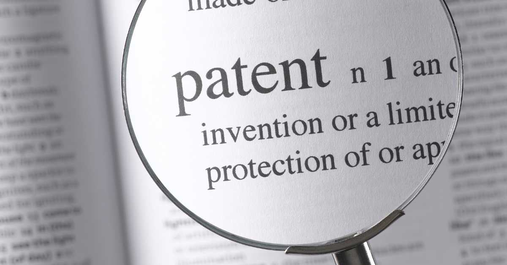

Discover why patent searches are essential for protecting your inventions. Learn from expert patent attorneys at Project Patent by Kaufhold and Dix Patent Law how to secure your intellectual property and navigate trademark law and copyright law with confidence.
When inventors dream up a groundbreaking idea, it’s natural to feel the urge to protect it immediately. After all, the journey from concept to commercialization is filled with excitement, but also significant risks. One of the most critical steps in securing your invention is conducting a thorough patent search—a process often underestimated by innovators. At Project Patent by Kaufhold and Dix Patent Law, we understand that a patent is more than a legal formality; it’s a strategic tool that safeguards your creativity and ensures your idea has a clear path to market.
A patent search might sound like a simple background check, but in reality, it’s an intricate investigation into the world of intellectual property. It involves examining prior patents, published applications, and sometimes even industry publications to ensure your invention is truly novel. Skipping this step can lead to legal disputes, wasted resources, and lost time. As seasoned patent attorneys, we see firsthand how inventors who invest in a comprehensive search gain a significant advantage—not just in protecting their idea, but also in shaping a strong, defensible patent application.
Understanding how to patent an idea begins with recognizing that not all ideas qualify for protection. The originality, utility, and feasibility of your concept are key factors in determining patentability. This is where expert guidance from a patent lawyer becomes indispensable. We work closely with clients to evaluate the uniqueness of their inventions, advising whether a utility, design, or even a plant patent might be most appropriate. The right patent strategy can make the difference between a thriving innovation and one lost to prior claims.
With the stakes this high, it’s clear that a patent search isn’t just a preliminary step—it’s the foundation upon which your entire IP strategy is built. At Project Patent, our team has decades of experience navigating this complex landscape, ensuring that clients’ inventions are thoroughly vetted and positioned for success. In this article, we’ll explore the importance of patent searches, how they benefit inventors, and why working with an expert patent service provider is a game-changer for anyone looking to protect their creative work.
A patent search is more than a box to check; it’s a critical tool that informs your decisions at every stage of the invention process. Conducting a search early helps inventors avoid costly mistakes by revealing existing patents that could overlap with their idea. This insight allows for modifications that maintain originality and strengthen the application. From a strategic standpoint
, it also provides leverage when negotiating licensing deals or seeking investors.
A comprehensive search can even highlight opportunities in unexpected areas. For example, an inventor might discover adjacent technologies where their innovation could have a competitive edge, or identify potential partnerships with companies holding complementary patents. In short, the search process equips inventors with knowledge, clarity, and confidence—key ingredients for turning an idea into a market-ready product.
While it’s possible to perform a basic patent search online, the expertise of a patent attorney is invaluable. Patent law is nuanced, and databases can be complex, requiring professional interpretation to avoid overlooking critical information. A skilled patent lawyer can analyze prior art, assess potential infringement risks, and provide a realistic assessment of your invention’s patentability.
Moreover, working with a patent attorney ensures your search aligns with broader IP strategies, including considerations related to trademark law and copyright law. While patents protect inventions, trademarks safeguard brand identity, and copyrights cover original works of authorship. Understanding how these protections intersect helps inventors craft a holistic approach to intellectual property—maximizing both security and market potential.
Conducting a patent search isn’t just a preventative measure; it directly influences the drafting and submission of your patent application. When prior art is carefully reviewed, your application can be tailored to emphasize unique aspects of your invention, improving the likelihood of approval.
In addition, early identification of potential conflicts with existing patents allows your patent lawyer to strategize responses to future challenges. By anticipating hurdles, the patent filing process becomes more efficient and less stressful. Essentially, a thorough search ensures that when you submit your patent application, it’s strong, focused, and ready to withstand scrutiny from patent examiners.
At Project Patent by Kaufhold and Dix Patent Law, our patent service goes beyond mere application submission. We provide end-to-end support, from initial consultations to drafting, filing, and responding to patent office actions. This comprehensive approach ensures inventors aren’t left navigating complex legal procedures
alone.
The value of a full-service patent provider is especially significant for small businesses and individual inventors. With transparent, flat-fee arrangements, clients know exactly what to expect financially while receiving expert guidance at every stage. This combination of reliability and clarity helps innovators focus on their core mission: developing and marketing their inventions.
A successful innovation strategy isn’t limited to patent protection alone. Intellectual property encompasses patents, trademarks, and copyrights, each serving a unique purpose. By integrating these protections, inventors create a robust legal framework that deters competitors, builds credibility, and enhances marketability.
For example, while a patent protects the functional aspects of a product, a trademark ensures brand recognition, and copyrights safeguard related materials such as software, manuals, or marketing content. A seasoned patent lawyer can guide inventors in balancing these protections to optimize both legal security and commercial advantage.
Even with professional guidance, patent searches can present challenges. One frequent difficulty is navigating ambiguous prior art or patents with broad claims. Without proper expertise, inventors may misinterpret findings, potentially jeopardizing the originality of their application.
Another challenge is understanding the differences in trademark law and copyright law as they relate to patents. A thorough patent service provider ensures these distinctions are clear, helping clients make informed decisions that safeguard their innovation across all relevant domains. At Project Patent, our attorneys combine technical acumen with legal insight to overcome these hurdles, delivering clarity, confidence, and actionable recommendations.
The timeline varies, but most patents take anywhere from one to three years, depending on examination speed, complexity, and office action responses. Working with a professional team helps streamline the process and reduce delays.
Not necessarily. Clear descriptions, drawings, and detailed functionality explanations are often enough. However, a prototype can help clarify features and strengthen your documentation.
You can, but it’s risky. Patent language is complex, and even minor errors can weaken your protection. A qualified patent attorney or patent lawyer ensures strong, defensible claims.
A provisional application gives you an early filing date and up to one year to prepare your full application. A non-provisional patent undergoes examination and can result in an issued patent.
No. Patents are country-specific. You can, however, apply for international protection through systems like the PCT (Patent Cooperation Treaty).